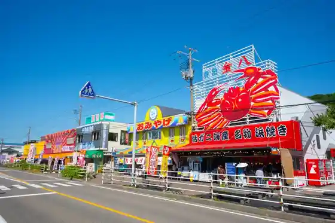
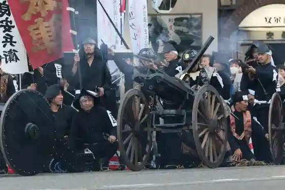
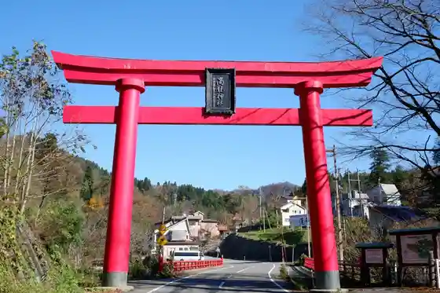

Teradomari Sakana no Market Tori (Sakana no Ame Yoko)
Nagaoka, Niigata · 0258-75-3363 · Official / source link

Kome Hyaku Tawara Festival
Nagaoka, Niigata · 0258-39-2221 · Official / source link

Koryu Shrine
Nagaoka, Niigata · 090-7261-3940 · Official / source link

Echigo Yamakoshi (Ushi no Kaku Tsuki) Taikai
Nagaoka, Niigata · 0258-59-3933 · Official / source link
Kokuei Echigo Kyuryo Park
Nagaoka, Niigata · 0258-47-8001 · Official / source link
Nagaoka Festival Daihanabitaikai
Nagaoka, Niigata · 0570-082-083 · Official / source link
Yukyu Yama Park
Nagaoka, Niigata · 0258-39-2230 · Official / source link
Yamakoshi Arupaka Ranch
Nagaoka, Niigata · 0258-59-2062 · Official / source link
Nagaoka Toki to Nature no Gakushu Kan Toki Mi Te
Nagaoka, Niigata · 0258-75-3201 · Official / source link
Nagaoka Uintafesu 2026- Yuki Shika Festival Shinsho -
Nagaoka, Niigata · 0258-32-4500 · Official / source link
Yukiguni Botanical Garden
Nagaoka, Niigata · 0258-46-0030 · Official / source link
Yomogihira Onsen Izumi Ya
Nagaoka, Niigata · 0258-23-2231 · Official / source link
Hotoku Yama Inari Taisha
Nagaoka, Niigata · 0258-92-3341 · Official / source link
Echigo Kawaguchi Yana Ba Otokoyama Gyojo
Nagaoka, Niigata · 0258-89-3104 · Official / source link
Hana Mizuki Onsen Kiyoshi (Kiho)
Nagaoka, Niigata · 0258-42-4126 · Official / source link
Kinpo Shrine
Nagaoka, Niigata · 0258-32-2337 · Official / source link
Roadside Station (Ryokan no Sato Washima) (Kokudo 116 Go)
Nagaoka, Niigata · 0258-41-8110 · Official / source link
Kokuei Echigo Kyuryo Park (Kaori no Bara Festival Aki)
Nagaoka, Niigata · 0258-47-8001 · Official / source link
Yomogi Taira Onsen
Nagaoka, Niigata · Official / source link
Kokuei Echigo Kyuryo Park (Xmas Irumineshon)
Nagaoka, Niigata · 0258-47-8001 · Official / source link
Koshiji Momiji Festival
Nagaoka, Niigata · 0258-92-5903 · Official / source link
Aso Baths
Nagaoka, Niigata · 0258-31-9300 · Official / source link
Nagaoka Kome no Jin 2025 in Aore Nagaoka
Nagaoka, Niigata · 0258-39-2223 · Official / source link
Nagaoka Meihin no Kan (Ponshu Kan)
Nagaoka, Niigata · 0258-94-4313 · Official / source link
Roadside Station (Nagaoka Hanabi Kan)
Nagaoka, Niigata · 0258-86-7766 · Official / source link
Nitokomieru Kan
Nagaoka, Niigata · 0258-89-7105 · Official / source link
Teradomari Tsuwabuki Matsuri
Nagaoka, Niigata · 0258-75-3228 · Official / source link
Teradomari Onsen (Teradomari Onsen Sato)
Nagaoka, Niigata · 0258-75-3363 · Official / source link
Kitsuno Kawa Sake Museum (Jo Kura (Jogura))
Nagaoka, Niigata · 0258-77-9910 · Official / source link
Supa Sento Echigo Nagaoka Yuraiya
Nagaoka, Niigata · 0258-31-5526 · Official / source link
Niigata Prefectural Kindai Art Museum
Nagaoka, Niigata · 0258-28-4111 · Official / source link
Yamakoshi no Tanada Tana Ike
Nagaoka, Niigata · 0258-59-2343 · Official / source link
Nagaoka Ei Campground (Higashiyama Famirii Land)
Nagaoka, Niigata · 0258-34-2225 · Official / source link
Yamakoshi Sangyo Festival
Nagaoka, Niigata · 0258-59-2343 · Official / source link
Oishii Sake Ni Aore Echigo Nagaoka Sake no Jin
Nagaoka, Niigata · Official / source link
Aki no Nagaoka Kurafutofea 2026 Atobirejji
Nagaoka, Niigata · 080-6718-1838 · Official / source link
Nakayama Suido
Nagaoka, Niigata · 0258-59-2343 · Official / source link
Teradomari Kinpachi Baths
Nagaoka, Niigata · 0258-75-5888 · Official / source link
Wajima Oto Campground
Nagaoka, Niigata · 0258-74-3010 · Official / source link
Momiji Sono
Nagaoka, Niigata · 0258-92-6360 · Official / source link
AQUARE Akuare Nagaoka
Nagaoka, Niigata · 0258-47-5656 · Official / source link
Puraibetosauna (ART)
Nagaoka, Niigata · 0258-75-3228 · Official / source link
Roadside Station (R290 Tochio) Bussan Hambai Kona
Nagaoka, Niigata · 0258-53-2030 · Official / source link
Tochio Fisshingu Park
Nagaoka, Niigata · 0258-86-7224 · Official / source link
Nagaoka Festival Tokubetsukikaku Nagaoka Wo Tanoshi Mu Basu Tour (Asahi Shuzo to Kome Tonakayoshi Park)
Nagaoka, Niigata · 0120-865-615 · Official / source link
Teradomari Chuo Beach
Nagaoka, Niigata · 0258-75-3363 · Official / source link
Echigo Kawaguchi Onsen Resort
Nagaoka, Niigata · 0258-89-4511 · Official / source link
Uma Takanawa Bun Kan Kaen Doki Museum (Uma Taka Iseki, Sanju Inaba Iseki)
Nagaoka, Niigata · 0258-46-0601 · Official / source link
Naniwa Ya Seika (Kabu)
Nagaoka, Niigata · 0258-86-7033 · Official / source link
Nippon no Hara Fukei (Yamakoshi) Wo Mankitsu !
Nagaoka, Niigata · 0258-32-1187 · Official / source link
Yofu Katsu Domburi
Nagaoka, Niigata · 0258-36-2537 · Official / source link
Yamamoto Isoroku Memorial Museum
Nagaoka, Niigata · 0258-37-8001 · Official / source link
Niigata Prefectural History Museum
Nagaoka, Niigata · 0258-47-6130 · Official / source link
Kasei Ranch
Nagaoka, Niigata · 0256-78-8866 · Official / source link
Kokuei Echigo Kyuryo Park (Churippu Festival)
Nagaoka, Niigata · 0258-47-8001 · Official / source link
Nagaoka Machi Baru
Nagaoka, Niigata · 0258-32-7002 · Official / source link
Nagaoka Sensai Museum
Nagaoka, Niigata · 0258-36-3269 · Official / source link
Dai 34 Kai Nagaoka Hana Ippai Fea 2026
Nagaoka, Niigata · 0258-39-8718 · Official / source link
Etsu no Murasaki (Jimoto Ni Aisa Reru Shinise no Shoyu Ya)
Nagaoka, Niigata · 0258-32-0159 · Official / source link
Dai 19 Kai Echigo Nagaoka Hinamo no Gatari
Nagaoka, Niigata · 0258-32-7002 · Official / source link
Teradomari Suizoku Museum
Nagaoka, Niigata · 0258-75-4936 · Official / source link
Roadside Station (Echigo Kawaguchi) Koryu Bussan Kan Aguri Village
Nagaoka, Niigata · 0258-89-4550 · Official / source link
Zennihon Maruta Sagiri Senshukentaikai
Nagaoka, Niigata · 0258-42-2249 · Official / source link
Rai Den Tenjin Gokaku Kigan Matsuri
Nagaoka, Niigata · 0258-51-1195 · Official / source link
Edojidai Kara Tsuzuku Jozo no Town (Settaya Miyauchi) Wo Aruko U !
Nagaoka, Niigata · 0258-32-1187 · Official / source link
Hakusan Hime Shrine
Nagaoka, Niigata · 0258-86-8758 · Official / source link
Echigo Nagaoka Meijin Tatsujin Kanko Takushii
Nagaoka, Niigata · 0258-32-1187 · Official / source link
Oguni Aki Festival
Nagaoka, Niigata · 0258-95-5905 · Official / source link
Mishima Sangyo Festival
Nagaoka, Niigata · 0258-42-2249 · Official / source link
Nagaoka no Nature Ya Rekishi Nifure, Ninki no (Eguchi Dango) De Gurume Wo Tanno !
Nagaoka, Niigata · 0258-32-1187 · Official / source link
Kokuei Echigo Kyuryo Park (Oyako De Manabo U ! Kabutomushi no Kogirikuwagata no Kai Ho Koza)
Nagaoka, Niigata · 0258-47-8001 · Official / source link
Doin Kogen Campground
Nagaoka, Niigata · 0258-58-2120 · Official / source link
VILLA VOIX (Vira Vowa)
Nagaoka, Niigata · 050-1809-1630 · Official / source link
Nagaoka Festival
Nagaoka, Niigata · 0258-39-2221 · Official / source link
Kokuei Echigo Kyuryo Park (Kurisumasurozufesuta)
Nagaoka, Niigata · 0258-47-8001 · Official / source link
Happo Dai
Nagaoka, Niigata · 0258-32-6117 · Official / source link
(Dai 17 Kai Furawasutanpurarii)
Nagaoka, Niigata · 0258-47-8001 · Official / source link
Ote Tori Uintairumineshon 2025
Nagaoka, Niigata · 0258-30-5590 · Official / source link
Kome Hyaku Tawara Pureisu Miraie Nagaoka
Nagaoka, Niigata · 0258-86-6008 · Official / source link
Naka Yuki Shima Suwajinja Toro Shinji (Toro Oshi Ai)
Nagaoka, Niigata · 0258-61-2013 · Official / source link
Aore ! Doitsufesuto 2026
Nagaoka, Niigata · 0258-39-2500 · Official / source link
Teradomari Yo Izumi Tera
Nagaoka, Niigata · 0258-75-2210 · Official / source link
Go Ju no City
Nagaoka, Niigata · 0258-39-2228 · Official / source link
Kinpo Shrine no Yabusame
Nagaoka, Niigata · 0258-32-2337 · Official / source link
Kokuei Echigo Kyuryo Park (Yukiwari Kusa Festival)
Nagaoka, Niigata · 0258-47-8001 · Official / source link
Aollumination2025-2026
Nagaoka, Niigata · 0258-39-2500 · Official / source link
Shiteihoru Plaza Aore Nagaoka (Nagaoka Yakusho)
Nagaoka, Niigata · 0258-35-1122 · Official / source link
Tochio no Aburage Ge (Aburage)
Nagaoka, Niigata · 0258-51-1195 · Official / source link
Akiba Sanjaku Bo Taiken Gen (Akiba Shrine)
Nagaoka, Niigata · 0258-51-1195 · Official / source link
Puraibetosauna ART
Nagaoka, Niigata · 0258-75-3228 · Official / source link
Nagaoka Tateshina Gaku Museum
Nagaoka, Niigata · 0258-32-0546 · Official / source link
Suido Park
Nagaoka, Niigata · 0258-39-2230 · Official / source link
Teradomari Minato Park
Nagaoka, Niigata · 0258-75-3105 · Official / source link
Nozumi Beach
Nagaoka, Niigata · 0258-75-3363 · Official / source link
Mishima Festival Daihanabitaikai
Nagaoka, Niigata · 0258-42-2249 · Official / source link
Ryokan no Sato Art Museum
Nagaoka, Niigata · 0258-74-3700 · Official / source link
Eguchi Dango Main Shop
Nagaoka, Niigata · 0258-47-4105 · Official / source link
Morohashi Shuzo (Kabu) / (Etsu no Kagetora)
Nagaoka, Niigata · 0258-52-1151 · Official / source link
Ochimizu Beach
Nagaoka, Niigata · 0258-74-3111 · Official / source link
JA Echigo Nakagoshi Wanja Land Fesu 2025 JA Echigo Nakagoshi Nogyo Festival
Nagaoka, Niigata · 0258-35-1300 · Official / source link
Momiji Sono (Oka no Ue no Geihinkan)
Nagaoka, Niigata · 0258-86-5208 · Official / source link
Mori Mori no Mori Yusui (Todo no Moriyusui)
Nagaoka, Niigata · 0258-58-3050 · Official / source link
Kanayama Beach
Nagaoka, Niigata · 0258-75-3363 · Official / source link
Kawaguchi Sports Park Oto Campground
Nagaoka, Niigata · 0258-89-4171 · Official / source link
Ki Kago Memorial Park
Nagaoka, Niigata · 0258-39-5525 · Official / source link
Kyu Kina Safuran Sake Seizo Honpo Komegura
Nagaoka, Niigata · 0258-86-8545 · Official / source link
Sumon Yamabiraki (Otake)
Nagaoka, Niigata · 0258-51-1195 · Official / source link
Oguni Yuki Festival
Nagaoka, Niigata · 0258-95-5905 · Official / source link
Kawai Tsuginosuke Memorial Museum
Nagaoka, Niigata · 0258-30-1525 · Official / source link
Kikumori Kinen Art Museum Genzai, Kyukanchu Desu
Nagaoka, Niigata · 0258-74-3700 · Official / source link
Echigo Yukiwari Kusa Kaido Sumaho De Sutanpurarii 2026
Nagaoka, Niigata · 0258-32-1187 · Official / source link
Mishima Festival
Nagaoka, Niigata · 0258-42-2249 · Official / source link
Shinanogawa (Chosei Hashi)
Nagaoka, Niigata · 0258-32-1187 · Official / source link
Jozo no Machi Settaya Sansaku to Pawasupotto Koryu Shrine
Nagaoka, Niigata · 0258-32-1187 · Official / source link
Hirakata Shrine
Nagaoka, Niigata · 0258-32-1032 · Official / source link
Umikaze Tei Teradomari Nihonkai Ikesu Resutoran
Nagaoka, Niigata · 0258-75-5555 · Official / source link
Wajima Tou Ru Mondo
Nagaoka, Niigata · 0258-74-3002 · Official / source link
Nichiren Shu Honzan Village Ta Ho Yama Myoho Tera
Nagaoka, Niigata · 0258-74-2207 · Official / source link
Senshugahara Furusato Forest
Nagaoka, Niigata · 0258-39-2230 · Official / source link
Nyoze Kura Museum
Nagaoka, Niigata · 0258-32-1489 · Official / source link
Aoi Shuzo (Kabu) / (Maison Aoi - Mezon Aoi -)
Nagaoka, Niigata · 0258-32-0181 · Official / source link
Nagaoka Hanabi no Miryoku Wo Taikan Roadside Station Nagaoka Hanabi Kan to Hotoku Yama Inari Taisha
Nagaoka, Niigata · 0258-32-1187 · Official / source link
Ao Shiba Shrine
Nagaoka, Niigata · 0258-33-1769 · Official / source link
Masugata Yama Nature Park
Nagaoka, Niigata · 0258-92-5910 · Official / source link
Nagaoka Higashiyama Furusato Taiken Farm
Nagaoka, Niigata · 090-3638-4765 · Official / source link
Itarian (Furendo)
Nagaoka, Niigata · 0258-28-0033 · Official / source link
Takashi Watari Shrine
Nagaoka, Niigata · 0258-52-3521 · Official / source link
Daiyon Hokuetsu Museum Nagaoka no Ayumi
Nagaoka, Niigata · 025-222-4111 · Official / source link
Hosho Tera
Nagaoka, Niigata · 0258-46-4768 · Official / source link
Niigata Aji no Ren Honpo Nanoka Town Chokueiten
Nagaoka, Niigata · 0120-585-383 · Official / source link
Tochio Famirii Ski Area (Setchu Kyanpu)
Nagaoka, Niigata · 0258-53-2390 · Official / source link
Yamakoshi Fukko Koryu Kan Orataru
Nagaoka, Niigata · 0258-41-1203 · Official / source link
BOOKMARKS CAFE
Nagaoka, Niigata · 050-8882-6310 · Official / source link
Hasegawa Tei (Kyu Hasegawa Ie House)
Nagaoka, Niigata · 0258-92-5903 · Official / source link
Sakae Ryo Tera
Nagaoka, Niigata · 0258-32-2747 · Official / source link
Ushi no Kaku Tsuki (Ojiya Yamakoshi)
Nagaoka, Niigata · Official / source link
Ju Kan Sono
Nagaoka, Niigata · 0258-75-3105 · Official / source link
Kashiwa Tsuyu Shuzo (Kabu)
Nagaoka, Niigata · 0258-22-2234 · Official / source link
Asahi Shuzo (Kabu) / Sakahogai no Sato Asahi Yama
Nagaoka, Niigata · 0258-92-3181 · Official / source link
Kokuei Echigo Kyuryo Park (Sasa Dangozukuri)
Nagaoka, Niigata · 0258-47-8001 · Official / source link
Nagaoka Kojima Ya Main Shop
Nagaoka, Niigata · 0258-39-0543 · Official / source link
Saifuku Tera
Nagaoka, Niigata · 0258-33-3197 · Official / source link
Kokuei Echigo Kyuryo Park (Banjiitoranporin Kurukuru Boto)
Nagaoka, Niigata · 0258-47-8001 · Official / source link
Kokuei Echigo Kyuryo Park (Bara Saibai Koshukai Aki Bara no Kaika Nochi Kara Etto Made)
Nagaoka, Niigata · 0258-47-8001 · Official / source link
Yamamoto Memorial Park
Nagaoka, Niigata · 0258-39-2230 · Official / source link
Sumon Gaku Tochi Hori Tozanguchi
Nagaoka, Niigata · 0258-51-1195 · Official / source link
Sumon Gaku Nyu Shiokawa Tozanguchi
Nagaoka, Niigata · 0258-51-1195 · Official / source link
Mori Mori no Morina Mizu Park
Nagaoka, Niigata · 0258-58-3050 · Official / source link
Echigo Yukiwari Kusa Kaido Higaeri Basu Tour 2026
Nagaoka, Niigata · 0120-865-615 · Official / source link
Nokogiriyama Hanatate Kosu Tozanguchi
Nagaoka, Niigata · 0258-32-6117 · Official / source link
Osugi Park
Nagaoka, Niigata · 0258-42-3478 · Official / source link
Tochio Castle Ruins
Nagaoka, Niigata · 0258-51-1195 · Official / source link
Ju Kumo Sono
Nagaoka, Niigata · 0258-74-3111 · Official / source link
Nagaoka Shinsai Akaibu Center Kiokumirai 2026 Nen 1 Gatsu 31 Nichi Heikan
Nagaoka, Niigata · 0258-39-5525 · Official / source link
Nagaoka Eki Tourist Information
Nagaoka, Niigata · 0258-32-1187 · Official / source link
Kokuei Echigo Kyuryo Park (Park no Ki Wo no Mi De Hotsu Teo Sara Wo Tsukuro U !)
Nagaoka, Niigata · 0258-47-8001 · Official / source link
Nagaoka Hanshu Makino Ie Shiryo Kan
Nagaoka, Niigata · 0258-32-0546 · Official / source link
Kokuei Echigo Kyuryo Park (Mizu Asobi Plaza)
Nagaoka, Niigata · 0258-47-8001 · Official / source link
Gomoto Beach
Nagaoka, Niigata · 0258-75-3363 · Official / source link
Kawaguchi Sports Park Koteji Village
Nagaoka, Niigata · 0258-89-3000 · Official / source link
Fukushima Ko Soi
Nagaoka, Niigata · 0258-32-1187 · Official / source link
Nagaoka Kyodoshi Ryo Kan
Nagaoka, Niigata · 0258-35-0185 · Official / source link
Koshi Kogen Ski Area
Nagaoka, Niigata · 0258-59-3500 · Official / source link
Amayachi Baths Puraibetosauna
Nagaoka, Niigata · 0258-59-2343 · Official / source link
Toretate Jun Sen City Najira Te Sekihara Mise
Nagaoka, Niigata · 0258-47-2003 · Official / source link
Nichiren Shonin Kensui no Rei I
Nagaoka, Niigata · 0258-75-3363 · Official / source link
Shiteihoru Plaza Aore Nagaoka (Shiata)
Nagaoka, Niigata · 0258-39-2500 · Official / source link
Miko Jii Odori
Nagaoka, Niigata · 0258-95-5905 · Official / source link
Tochio 24 Nittoku Sen City Special
Nagaoka, Niigata · 090-2319-5600 · Official / source link
Nagaoka Jizake Juku
Nagaoka, Niigata · 0258-32-1187 · Official / source link
Higashiyama Fureai Nogyo Park
Nagaoka, Niigata · 0258-39-2223 · Official / source link
Kokuei Echigo Kyuryo Park (Neichakurafuto Wo Tanoshi Mo Nature Sozai no Jiorama Zukuri)
Nagaoka, Niigata · 0258-47-8001 · Official / source link
Nagaoka Sangyo Tenjishitsu
Nagaoka, Niigata · 0258-27-8812 · Official / source link
Seigun (Shinsei Fu Gun) Joriku no Chi
Nagaoka, Niigata · Official / source link
Akiba Park (Kenshin Ko Dozo Akiba Shrine Oku no In)
Nagaoka, Niigata · 0258-51-1195 · Official / source link
Tochio Temari
Nagaoka, Niigata · 0258-51-1195 · Official / source link
Shiki no Sato Koshi
Nagaoka, Niigata · 0258-59-3620 · Official / source link
Umamichi Forest Park
Nagaoka, Niigata · 0258-74-3010 · Official / source link
Nagaoka Tochio Art Museum
Nagaoka, Niigata · 0258-53-6300 · Official / source link
no no Eki Aguratte Nagaoka (Furusato Taiken Nogyo Center)
Nagaoka, Niigata · 0258-34-5360 · Official / source link
Ushigakubi Lookout
Nagaoka, Niigata · 0258-89-3113 · Official / source link
Kokuei Echigo Kyuryo Park (Omoshiro Kon Mushi Tokei Zukuri)
Nagaoka, Niigata · 0258-47-8001 · Official / source link
Yoita Folk History Museum (Kanetsugu O Fune Museum)
Nagaoka, Niigata · 0258-72-2021 · Official / source link
NEST nagaoka (Nesuto Nagaoka)
Nagaoka, Niigata · 0258-86-6008 · Official / source link
Kokuei Echigo Kyuryo Park (Satoyama Seguei Tour)
Nagaoka, Niigata · 0258-47-8001 · Official / source link
Yukyu Yamano Kyujo
Nagaoka, Niigata · 0258-33-0322 · Official / source link
Nagaoka Joshi Ni no Maru Ato
Nagaoka, Niigata · 0258-32-1187 · Official / source link
Shotoku Tera Garden
Nagaoka, Niigata · 0258-75-2029 · Official / source link
Nambu Shrine
Nagaoka, Niigata · 0258-51-1195 · Official / source link
Kokuei Echigo Kyuryo Park (Churippu no Kyukon Hori Tori Experience)
Nagaoka, Niigata · 0258-47-8001 · Official / source link
Kokuei Echigo Kyuryo Park (Satoyama Uokingu)
Nagaoka, Niigata · 0258-47-8001 · Official / source link
Kyu Kina Safuran Sake Seizo Honpo (Kote Kura) (Omoya) (Hanare Zashiki)
Nagaoka, Niigata · 0258-86-8545 · Official / source link
Kokuei Echigo Kyuryo Park (Nagaoka Uintafesu 2026 Rendo Ibento)
Nagaoka, Niigata · 0258-47-8001 · Official / source link
Shorai Kaku
Nagaoka, Niigata · 0258-92-3181 · Official / source link
Kokuei Echigo Kyuryo Park (Toreiruranningu Wo Tanoshi Mo !)
Nagaoka, Niigata · 0258-47-8001 · Official / source link
O Fuku Shuzo (Kabu) / (O Fukumasamune)
Nagaoka, Niigata · 0258-22-0086 · Official / source link
Tokusho Tera Tokusho Tera Iseki
Nagaoka, Niigata · 0258-72-2423 · Official / source link
Sarabureddo Ni Nore Ru ! Yamamichi De Joba Experience
Nagaoka, Niigata · 0258-41-6827 · Official / source link
Ikeura Shuzo (Kabu) / (Wagaku Go Mikoto)
Nagaoka, Niigata · 0258-74-3141 · Official / source link
Historic Site Meguri (Josho Yutaka Na Teradomari no Historic Site)
Nagaoka, Niigata · 0258-75-3363 · Official / source link
Saka Yuki Ue Shogakko Dento Kan
Nagaoka, Niigata · 0258-32-2134 · Official / source link
Kami no Bijutsu Museum
Nagaoka, Niigata · 0258-95-3161 · Official / source link
Kaki Kawa
Nagaoka, Niigata · 0258-39-2344 · Official / source link
(Kabu) Chomei Do Ame Ho
Nagaoka, Niigata · 0258-35-1211 · Official / source link
Teradomari Beach Supotsukoto
Nagaoka, Niigata · 0258-86-6719 · Official / source link
Hasegawa Shuzo (Kabu) / (Echigo Setsuko Ume)
Nagaoka, Niigata · 0258-32-0270 · Official / source link
Echigo Kawaguchi Onsen (Ko Minka)
Nagaoka, Niigata · 0258-89-4511 · Official / source link
Umi no Ie (Cha Ya Sumiyoshiya) 2024 Nen 7 Gatsu 12 Nichi Natsu Eigyokaishi Desu !
Nagaoka, Niigata · 0258-75-3015 · Official / source link
Kokuei Echigo Kyuryo Park (Hanae Purojiekuto)
Nagaoka, Niigata · 0258-47-8001 · Official / source link
Nagaoka Kantorii Kurabu
Nagaoka, Niigata · 0258-46-3131 · Official / source link
Kaori Hayashiji no Shidare Sakura
Nagaoka, Niigata · 0258-39-2344 · Official / source link
Nozumi River Park
Nagaoka, Niigata · 0258-75-3105 · Official / source link
Renge Tera no Osugi
Nagaoka, Niigata · 0258-42-2221 · Official / source link
Yamakoshi Sansaku Sutanpurarii [HAKONIWA]TRIP
Nagaoka, Niigata · 0258-41-1203 · Official / source link
Kuriyama Sawa Shidare Sakura
Nagaoka, Niigata · 0258-51-1195 · Official / source link
Kokuei Echigo Kyuryo Park (Shiitake Nameko no Hoda Ki Zukuri)
Nagaoka, Niigata · 0258-47-8001 · Official / source link
Nishikigoi Fureai Experience
Nagaoka, Niigata · 0258-59-2343 · Official / source link
Teradomari Nihonkai Yuhi Forest Sakura Namiki
Nagaoka, Niigata · 0258-75-3363 · Official / source link
Shin'o Memorial Park
Nagaoka, Niigata · 0258-89-3620 · Official / source link
Oguchi Renkon
Nagaoka, Niigata · 0258-61-2013 · Official / source link
Nagaoka Ei Ski Area (Samabobusure)
Nagaoka, Niigata · 0258-34-2225 · Official / source link
Yomogihira Onsen Yu Meguri Tegata Hatsubaichu !
Nagaoka, Niigata · Official / source link
Riaru Takara Sagashi Fushigi Na Maho no Hanabidama
Nagaoka, Niigata · 0258-39-2221 · Official / source link
Eguchi Dango Settaya Mise
Nagaoka, Niigata · 0258-39-9173 · Official / source link
Imamiya Park
Nagaoka, Niigata · 0258-39-2344 · Official / source link
Komagata Tokichi Kinen Art Museum
Nagaoka, Niigata · 0258-35-6111 · Official / source link
Kawai Shrine
Nagaoka, Niigata · 0258-89-3111 · Official / source link
Kowakingu & Shieasupesu Yururi Ya
Nagaoka, Niigata · 0258-77-4751 · Official / source link
Echigo Kawaguchi Onsen (Puru)
Nagaoka, Niigata · 0258-89-3000 · Official / source link
Kokuei Echigo Kyuryo Park (Haru no Badotchingu)
Nagaoka, Niigata · 0258-47-8001 · Official / source link
Komegura Rinyuaru 5 Shunen (Kura Meguri Nazotoki Rarii)
Nagaoka, Niigata · Official / source link
Kokuei Echigo Kyuryo Park (JOYFUL Sakka Taiken Kai)
Nagaoka, Niigata · 0258-47-8001 · Official / source link
Nihonkai no Megumi Womarugoto Tanoshi Mu
Nagaoka, Niigata · 0258-75-3363 · Official / source link
Enoki Toge Kosenjo Park
Nagaoka, Niigata · 0258-32-1187 · Official / source link
Fujihashi Rekishi no Plaza (Fujihashi Iseki)
Nagaoka, Niigata · 0258-32-0546 · Official / source link
Tsuneyasu Tera (Akiba Koennai)
Nagaoka, Niigata · 0258-51-1195 · Official / source link
Yamamoto Isoroku no Kyozo
Nagaoka, Niigata · 0258-39-2221 · Official / source link
Tochio Famirii Ski Area
Nagaoka, Niigata · 0258-53-2390 · Official / source link
Teradomari (Reiwa 7 Nendo Nenmatsunenshi) in Sakana no Market Tori
Nagaoka, Niigata · 0258-75-3363 · Official / source link
Kokuei Echigo Kyuryo Park (Konchu Hyohon Zukuri)
Nagaoka, Niigata · 0258-47-8001 · Official / source link
Echigo Nagaoka Sake no Jin to Nagaoka Jizake Juku
Nagaoka, Niigata · 0570-03-8689 · Official / source link
Kawaguchi Kizuna Kan
Nagaoka, Niigata · 0258-89-3620 · Official / source link
Mori Mori no Mori × Kaji Hijiri Ya Korabo Kikaku (Haizai Aquarium)
Nagaoka, Niigata · 0258-58-3050 · Official / source link
Choko Tera
Nagaoka, Niigata · 0258-36-0341 · Official / source link
Echigoiroiro (Iro) Meguri Roadside Station Doraibusutanpurarii
Nagaoka, Niigata · 025-284-7664 · Official / source link
Taniuchi Ike (Kakitsubata Gunsei Chi)
Nagaoka, Niigata · Official / source link
Echigo Yukiwari Kusa Kaido Higaeri Basu Tour 2026
Nagaoka, Niigata · 0120-865-615 · Official / source link
WILLOW HOUSE
Nagaoka, Niigata · 050-8883-3557 · Official / source link
Koryu Taiken Shisetsu Minna no Experience Kan (Oguni Forest Park Nai) Kyukanchu (Reiwa 7 Nen 10 Gatsu 1 Nichi Reiwa 8 Nen 4 Gatsukoro Made)
Nagaoka, Niigata · 0258-95-3161 · Official / source link
Gangi to (Aburage) no Machi Tochio Sansaku
Nagaoka, Niigata · 0258-32-1187 · Official / source link
Teradomari Bunka Center (Natsuyasumi Kosaku Kizzufesu)
Nagaoka, Niigata · 0258-75-5155 · Official / source link
Kokuei Echigo Kyuryo Park (Puremiamu Kyanpu Taiken Kai)
Nagaoka, Niigata · 0258-47-8001 · Official / source link
Koshiji Rogeiningu 2024 (Koshiroge)
Nagaoka, Niigata · 090-5330-2073 · Official / source link
KOSHIJI Su no Kingu IN Momiji Sono Koshiji Hara
Nagaoka, Niigata · 090-7406-0534 · Official / source link
Ito Michi Uemon no Hi
Nagaoka, Niigata · 0258-32-1187 · Official / source link
Yamamoto Isoroku Seika (Fukugen)
Nagaoka, Niigata · 0258-39-2221 · Official / source link
Kawaguchi Sports Park (Setchu Kyanpu)
Nagaoka, Niigata · 0258-89-4171 · Official / source link
Nagaokamo no Zukuri Fesu
Nagaoka, Niigata · 0258-39-2222 · Official / source link
Akiyama Takashi Posuta Art Museum Nagaoka (Ato)
Nagaoka, Niigata · 0258-39-1233 · Official / source link
Yoita Rakuzan En
Nagaoka, Niigata · 0258-72-4161 · Official / source link
Hatcho Oki Kosenjo Park
Nagaoka, Niigata · 0258-32-1187 · Official / source link
Fusai Tera
Nagaoka, Niigata · 0258-34-7125 · Official / source link
Kawai Tsuginosuke no Hi
Nagaoka, Niigata · Official / source link
Ao Shiba Shrine
Nagaoka, Niigata · 0258-33-1769 · Official / source link
Hayashi Kyo Iori
Nagaoka, Niigata · 0258-89-2713 · Official / source link
Yoita Kasen Ryokuchi Tachibana Park
Nagaoka, Niigata · 0258-44-0062 · Official / source link
Nagaoka Tsukano Yama Ushi no Kubi Chiku
Nagaoka, Niigata · 0258-92-5903 · Official / source link
Sumon Gaku
Nagaoka, Niigata · 0258-51-1195 · Official / source link
Kawaguchi Sports Park
Nagaoka, Niigata · 0258-89-4171 · Official / source link
Man Hon Sakura Shokuju Obi
Nagaoka, Niigata · 0258-61-2013 · Official / source link
Yonekkusukantorii Club
Nagaoka, Niigata · 0258-75-2000 · Official / source link
Kokosei Ijo Gentei Otona no Bakkuyado Tour
Nagaoka, Niigata · 0258-75-4936 · Official / source link
Kokuei Echigo Kyuryo Park ((Echigon) to (Kororin) Wo Tsukuro U !)
Nagaoka, Niigata · 0258-47-8001 · Official / source link
Nikonikohiroba (Yamakoshi no Tanada Tana Ike)
Nagaoka, Niigata · 0258-59-2343 · Official / source link
Sasa Dango [ Nagaoka Kawaguchi Chiiki ]
Nagaoka, Niigata · 0258-89-4550 · Official / source link
Abaraya Iseki
Nagaoka, Niigata · 0258-89-3111 · Official / source link
Shoku Raku Heri
Nagaoka, Niigata · 0258-31-4404 · Official / source link
Teishin Ama Soan Kahi
Nagaoka, Niigata · 0258-24-3031 · Official / source link
Koshiji Hotaru Festival
Nagaoka, Niigata · 0258-92-5903 · Official / source link
Kawaguchi Sports Park Okunai Getoboru Ba (Supaku Kawaguchi)
Nagaoka, Niigata · 0258-89-4171 · Official / source link
Oguni Forest Park (Fuyu Kyanpu)
Nagaoka, Niigata · 0258-95-3161 · Official / source link
chahho (Chahho)
Nagaoka, Niigata · 0258-86-8545 · Official / source link
Yujo no So Zo
Nagaoka, Niigata · 0258-61-2013 · Official / source link
Tsukutsu Te Shiru ! Shokoku Washi Experience
Nagaoka, Niigata · 0258-86-8545 · Official / source link
Hakko Kurashi Koza Wainsemina
Nagaoka, Niigata · 0258-86-8545 · Official / source link
Otona no Shuzo Tour
Nagaoka, Niigata · 0258-32-0270 · Official / source link
Oyako Wakuwaku Sakana Land Bakkuyado Tour
Nagaoka, Niigata · 0258-75-4936 · Official / source link
Kawaguchi Sports Park Pikunikku Plaza
Nagaoka, Niigata · 0258-89-4171 · Official / source link
Mishima Local History Museum
Nagaoka, Niigata · 0258-42-2222 · Official / source link
Otake Tei Memorial Museum
Nagaoka, Niigata · 0258-61-2010 · Official / source link
Echigo Kawaguchi Nama Hamu Juku
Nagaoka, Niigata · 080-3148-5754 · Official / source link
Settaya Bachan no Daidokoro Kyodoryori Experience
Nagaoka, Niigata · Official / source link
Settaya Miyauchi Omotenashitorippu
Nagaoka, Niigata · 0258-35-3315 · Official / source link
Wajima Kanko Boranteiagaido Tomeguru (Ryokan Tazune Michi)
Nagaoka, Niigata · 0258-74-3114 · Official / source link
Yukyu Yama Shokon Sha
Nagaoka, Niigata · 0258-32-1187 · Official / source link
Niigata Prefectural History Museum Taiken Puroguramu (Mini Sekibutsu Tsukuri)
Nagaoka, Niigata · 0258-47-6135 · Official / source link
Maejima Shrine
Nagaoka, Niigata · 0258-32-1187 · Official / source link
Nikko Sha
Nagaoka, Niigata · 0258-32-1187 · Official / source link
Kawaguchi Sports Park Gym
Nagaoka, Niigata · 0258-89-4171 · Official / source link
Kawaguchi Sports Park Tenisukoto
Nagaoka, Niigata · 0258-89-4171 · Official / source link
Kawaguchi Sports Park Yakyujo
Nagaoka, Niigata · 0258-89-4171 · Official / source link
Kawaguchi Chiiki Koryu Taiken Kan (Mori no Katarai)
Nagaoka, Niigata · 0258-89-3111 · Official / source link
Hajimete no Ho Ni Osusume ! Te Bineri Togei Taiken O Tameshi Puran
Nagaoka, Niigata · 0258-94-5933 · Official / source link
Nihonshu Suki Hikken ! Echigo Nagaoka no Jozo Kura to Bunka Wo Meguru 1 Haku 2 Nichi no Tabi
Nagaoka, Niigata · Official / source link
Osanpo Buranchi
Nagaoka, Niigata · 0258-35-3315 · Official / source link
Uwamae Shima Konpira Do
Nagaoka, Niigata · 0258-39-2344 · Official / source link
Nishikura Iseki
Nagaoka, Niigata · 0258-89-3111 · Official / source link
Niigata Prefectural History Museum Experience Kona (Asobi E Wo Tanoshi Mo !) Chushi
Nagaoka, Niigata · 0258-47-6130 · Official / source link
SUNSET RIVER FIELD
Nagaoka, Niigata · Official / source link
Teradomari Suizoku Museum Suiseiseibutsu Tansaku Kai (Tatsu no Otoshigo Wo Mitsu Keyo)
Nagaoka, Niigata · 0258-75-4936 · Official / source link
Utsukushii Sakuhin Wotsukuritai Honkaku Shiko no Anatani ! Dendo Rokuro Taiken O Tameshi Puran
Nagaoka, Niigata · 0258-94-5933 · Official / source link
Aki Wo Tanoshi Mu Uokingu Washima Teradomariwo Aruko U
Nagaoka, Niigata · 0258-86-6719 · Official / source link
Yoita Kasen Green Park
Nagaoka, Niigata · 0258-72-4161 · Official / source link